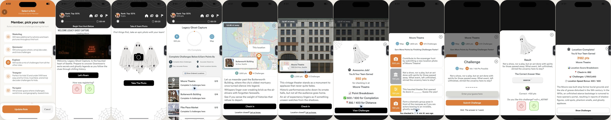
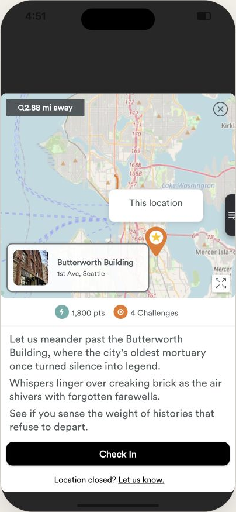
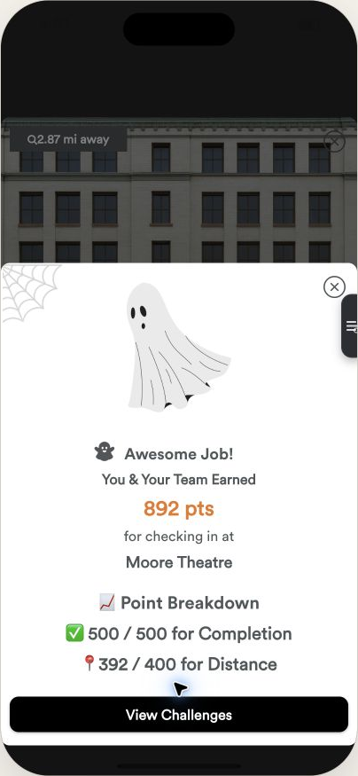
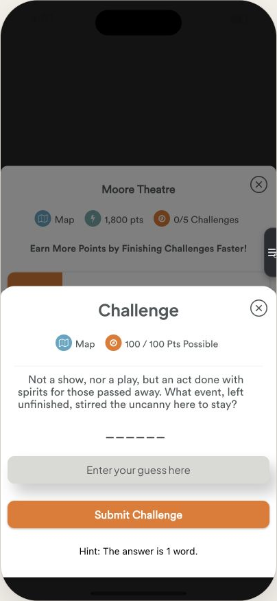

The current hunt screen, annotated
Comments on the Ghost Tour flow you sent, judged against the three questions a team asks on a walking tour. The full write-up is DESIGN_REVIEW.md.

 1
2
3
4
5
6
7
8
1
2
3
4
5
6
7
8
Main hunt screen
This is the screen people spend the whole tour on.
Header is status, not tour. Rank, points, four unlabeled icons. Rank "Top 50%" at 0 pts means nothing yet.Redesign: one row, team + score + time + help.
The countdown is the loudest number on screen and it is unexplained. Deadline or bonus? Anxiety without a reason makes groups quit rather than "lose". The ghost line beside it has no labels.Redesign: "1h 28m", red under 10 min, hidden when a hunt is untimed. No speed bonus.
"0% Complete" ring plus two chips take a third of the viewport at the exact moment we want people to feel this will be easy.Redesign: five-segment route bar, "Stop 1 of 5".
Permanent instructions. "Earn points by: accurate check-ins, finish locations quickly" is read-once copy shown on every visit, and it introduces two ideas that hurt completion (GPS accuracy, speed).Redesign: plain-language rules in a help sheet; one line of "what next" under the button.
"Show Ordered Locations" implies the list is unordered. A tour has an order; making it opt-in invites wandering and breaks the story.Redesign: stops are in order, always.
Every location card looks the same. No current / next / done state, no walk time, nothing says "go here now". This is the stall point.Redesign: one current-stop card with "Next stop", walk time and a single primary button.
"2.87 mi away" in white over a photo. Low contrast, and two-decimal miles is not how people walk.Redesign: "6 min walk · 0.3 mi" as text on a white card.
An unlabeled "≡" tab off the right edge. In the dark, in a group, every unlabeled control is a support chat.Redesign: removed; help is a labeled button.

1 2 3 4Location sheet
Screens 5 and 6
"Q2.88 mi away": the magnifier glyph is rendering as a letter. Small, but it is the first thing on the sheet.
A map that only says "This location". No route, no "you are here", no walk time. The map is the one place a lost group looks.Redesign: route map with numbered stops, done / current states, your position, and "Open in Maps".
"Check In" is the right idea but it is always enabled, so people press it early and get a distance penalty (next screen).Redesign: disabled with a plain reason until you are within range, then enables itself.
"Location closed? Let us know." is the only exit for a locked gate, and it ends the hunt for most groups.Redesign: "Skip this stop" keeps your points and shows the next stop.

1 2Check-in result
Screen 7
A modal on top of the location sheet. Second layer, second close button. Where does "X" take me?Redesign: the check-in confirms inline on the main screen with a toast; the challenges appear right below.
"392 / 400 for Distance." The team walked to the stop and pressed the button, and lost points for the phone's GPS. It reads as unfair, and unfair is the fastest way to a bad rating. Also: emoji as icons, against the brand guide.Redesign: flat +500 for checking in. No emoji.
 1
2
3
4
1
2
3
4
Challenge list
Screen 8
Three chips, "Map · 1,800 pts · 0/5 Challenges", in a third sheet layer. The main screen already had this information.Redesign: challenges live on the main screen under the stop card, "0 of 3 done".
"Earn More Points by Finishing Challenges Faster!" Speed pressure again, in bold, in the brand's marketing voice rather than a guide's.
Colour as meaning with no legend. Orange, grey, yellow, orange. Type? Difficulty? Points?Redesign: a word label per row (Trivia, Photo, Fill in) plus points and a done state.
"You checked in 0 min 16 secs ago." Developer copy. Nobody needs this on the tour.

1 2 3 4Answering a challenge
Screen 9
Modal over sheet over dimmed screen. Three layers deep now. The dimmed list behind still shows its own close button.Redesign: one sheet. Result shows inside it, "Next challenge" advances without closing, "Done" returns to the main screen.
A "Map" button inside a trivia question. Why would I leave the question for the map?
"------" with no explanation, and no way to know how many tries you get.Redesign: "2 tries", "Not quite. 1 try left", then the answer is revealed and you move on. Nothing blocks the group.
The hint is below the submit button, after the input, and costs nothing, so it is neither discoverable nor a choice.Redesign: "Use a hint (−25 pts)" beside "Skip this one", above the fold of the sheet.
 1
2
1
2
Location complete
Screen 11. The biggest drop-off risk on the tour.
A score breakdown with emoji, then a paragraph of lore. "Check-in: 892, Challenges: 1,790/2,400, Location Speed Bonus: 500/500". Numbers without a scale do not motivate; the lore is good but it is the wrong moment for reading.
The only button is "Show Challenges". The team has just finished. Their next thought is "where next, how far?" and it is not on the screen. Completion is a chain of five of these transitions and every one that is not explicit is a place to leave.Redesign: "Moore Theatre done! +1,290" with the fox, then "Next stop: Butterworth Building · 4 min walk" and one button, "Let's go".
Where I would look for the numbers
- Time gap between
stop_completedand the nextcheck_in, per stop. The "Stop done" card should shrink it. - Drop-off by stop index. Stop 1 means clarity; stop 3 or 4 means fatigue or closed locations.
- Skips per challenge (content bugs show up here) and per stop (closed-location signal).
- Help sheet opens per session; should fall.
- A rating prompt on the finish screen so satisfaction is captured while the fox is still up.
Ship behind a flag to a share of new hunts and compare for two weeks.